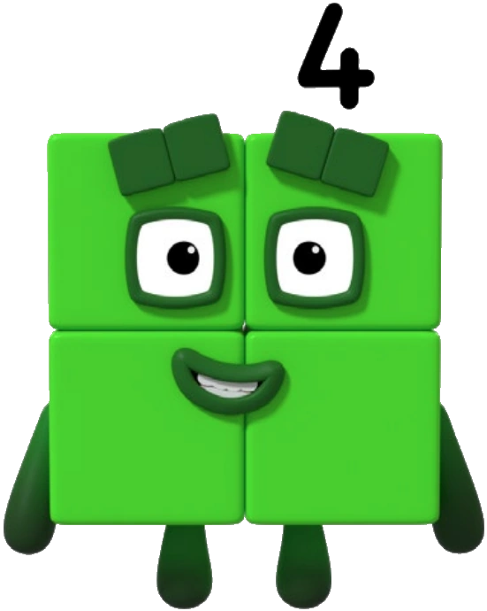
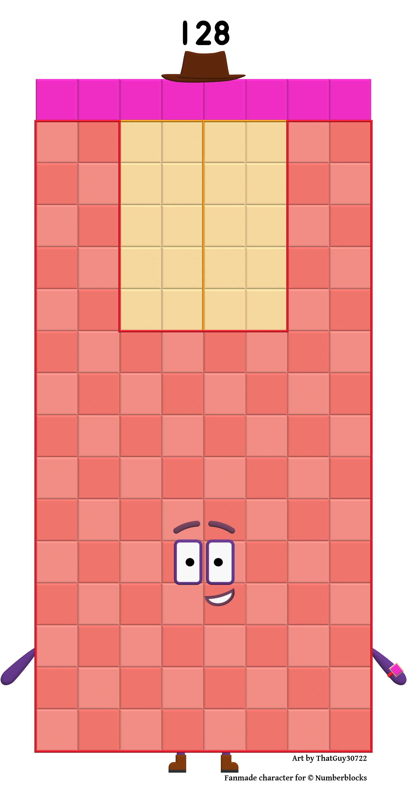
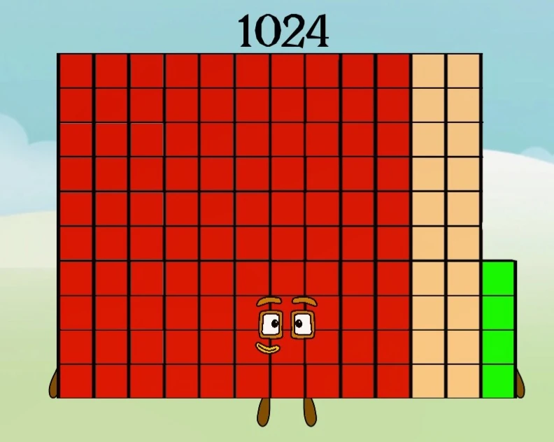

20=1
One
From 20 through 210, using official wiki images where available and fan/speculative wiki images for the higher blocks.
One

Two

Four

Eight

Sixteen

Thirty-Two

Sixty-Four

One Hundred Twenty-Eight

Two Hundred Fifty-Six

Five Hundred Twelve

One Thousand Twenty-Four